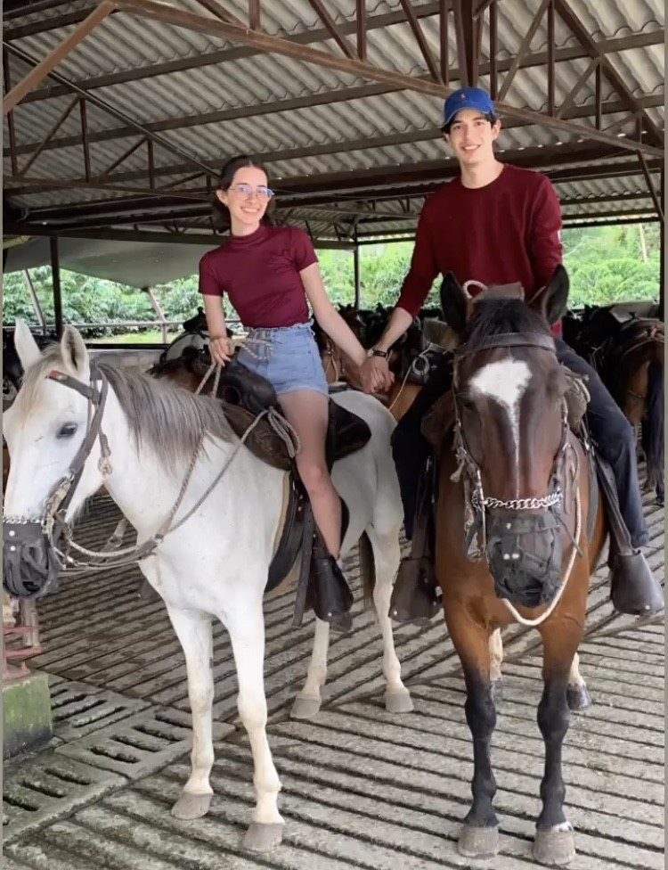

Por más momentos juntos
Para amar no se requiere estar presente en todo momento. Cuando el sentimiento se siente profundamente se logra estar con una persona sin la necesidad de tenerla durante todas las horas del día a nuestro lado. Al escribir este pequeño mensaje también estoy aplicando los temas que he aprendido durante los cursos de programación que he estado tomando durante las últimas dos semanas. Como puedes apreciar en este mensaje creado desde las entrañas de la programación, logre pensarte y escribirte mensajes a pensar de mis otros pasatiempos sin que ello signifique una falta de amor hacia vos, cosita preciosa.
Este mensaje es un reflejo de nuestra relación; quedara marcada y grabada durante el resto de la historia. Algo que podrá notarse, revelarse, sin importar que el tiempo siga recorriendo su dirección sin inmutarse sobre los fenómenos de este universo desconocido. Cuando este código, que refleja el amor que siento por vos, se esparza en esa red misteriosa, nunca más podrá ser eliminado. Nuestros momentos, deseos, acciones son algo que nadie nos podrá arrebatar, viviremos toda nuestras vidas pensándonos, amándonos con una intensidad producto de una alta llama en ese fogón que es nuestra relación.

A pesar de las peleas que hemos tenido, de las palabras elaboradas, inconscientemente, únicamente con el objetivo de herir, vos para mi sos algo que sobrepasa el amor. Cada día me acostumbro más a tu alocada forma de ser con todos los entes que rodean tu existencia. Sos una mujer que amo con toda mi alma y deseo estar con vos el resto de mi vida para poder compartir y reírme cada semana de tus ocurrencias y tragedias. Soy afortunado de tenerte, me siento privilegiado de poder compartir mis planes y sueños con una persona como vos.
Ya son dos años desde esa videollamada en la que pudiste leer lo que decía la hoja con el mensaje. Ese pedacito de papel mal rasgado y escrito que fue el principio de esto tan bonito que tenemos. Te amo con toda mi alma pecosita preciosa. Espero poder compartir muchos años más (toda mi vida) con la mujer que me hace soñar.